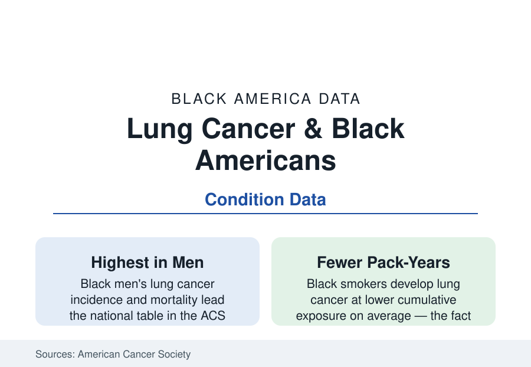

Black Public Health
Lung Cancer in Black Americans: Highest Rates, Latest Screening
Black men develop and die from lung cancer at America's highest rates — while the screening scan that cuts mortality reaches them last. The incidence and LDCT data.

Lung cancer kills more Black Americans than any other cancer, and Black men carry the highest incidence and mortality of any group in the American Cancer Society's tables — a lead built from the smoking century's targeted marketing (the menthol file of the tobacco article), an exposure pattern the screening rules long misread, and a treatment cascade whose every stage arrives later. The screening era has a tool — low-dose CT, proven to cut lung-cancer deaths by about a fifth in the landmark trial — and its uptake data record the now-familiar distribution. This article reads the lung file.
Incidence, Exposure, and the Menthol Ledger
The exposure data hold the file's distinctive science: Black smokers smoke fewer cigarettes per day and accumulate fewer pack-years than white smokers on average in the national surveys — while developing lung cancer at equal or higher rates, the susceptibility finding the biomarker studies (the cotinine and carcinogen-metabolite levels per cigarette running higher in Black smokers in the laboratory data — deeper inhalation, the menthol's cooling enabling it, slower nicotine clearance extending each cigarette's dose) documented across two decades. The menthol share is the marketing ledger made chemical: roughly 85% of Black smokers smoke menthols in the federal surveys — against about 30% of white smokers — the residue of the industry's documented urban targeting (the internal-documents archive: the billboards denser, the sponsorships deeper, the free-sample vans of the record), with the menthol rule-making of the current era (the FDA's proposed product standard, its litigation and delay in the policy record) the file's live regulatory front. The occupational layer stacks beneath (the asbestos, diesel, and foundry exposures of the employment file's industrial generations — the shipyard and plant cohorts whose lung data carry the workplace's signature beside the cigarette's).
Screening: The Threshold That Missed, and the Scan That Lags
The screening story is this atlas's data-ethics case in a second organ: the original eligibility rules (age and pack-year thresholds drawn from the trial populations — themselves overwhelmingly white) systematically excluded Black smokers, whose cancers arrive at lower pack-years and younger ages in the registry data — the disparity quantified in the 2019 analyses (roughly half of Black lung-cancer patients would have been screening-ineligible at diagnosis under the old criteria, against a third of white patients) and answered by the USPSTF's 2021 expansion (lower age, lower pack-years), the corrected criteria's equalizing effect now measurable in the eligibility models. Eligibility, though, is not uptake: the LDCT's actual use runs in the five-to-ten percent range of the eligible nationally in the claims and registry data — and Black eligible patients' screening rates run below white patients' in the multi-state studies, through the funnel this section knows (the shared-decision visit requirement, the scanner's geography, the stigma the lung file uniquely carries — the 'smoker's disease' blame that suppresses symptom-reporting and screening alike in the qualitative record, documented among the very patients the marketing targeted). The incidental-nodule and diagnostic follow-through data complete the cascade's middle.
Treatment and Survival
The outcomes data repeat the registry pattern with unusual consistency across eras: Black lung-cancer patients receive surgery for early-stage disease at lower rates in the SEER and national-cancer-database analyses (the curative-intent operation — the file's single largest survival lever — its gap documented since the landmark 1999 study and narrowed but not closed in the recent series, with the refusal-versus-not-offered decomposition in the chart studies locating much of it in the offer), receive biomarker testing (the EGFR/ALK/PD-L1 panel that assigns the targeted therapies) less often in the testing-era data — the precision-medicine gradient of the breast and MS files in thoracic form — and enroll in trials at the usual fraction. Stage at diagnosis runs later; survival, stage for stage, has converged in some recent analyses where treatment equalized (the equal-access systems' studies again the control) — the sentence this section keeps being able to write, and keeps having to. The cessation file closes the loop upstream: the quit-attempt rates (Black smokers attempt quitting at higher rates in the survey data) against the success rates (lower — the menthol's pharmacology, the cessation pharmacotherapy's access, and the quitline's reach all in the models), the gap the tobacco-control funding map prices.
Reading the Lung Data
Highest rates, a susceptibility the thresholds missed, a scan that reaches them last, and a surgery offered less: the lung file is the cancer file with every dial turned the same way — exposure marketed, science mis-calibrated, remedy rationed, blame assigned to the patient for the whole sequence. The corrected criteria of 2021 are the data's proof that the calibration can change. The screening counters will show whether the correction reaches the waiting room, which is the only place corrections count.
More in Black Public Health
Hypertension Among Black Adults: Prevalence, Control, and Consequences
About 55 percent of Black adults have hypertension — the highest rate of any U.S. group. Prevalence, onset, control, and the stroke, heart, and kidney consequences in the data.
Diabetes Among Black Adults: Prevalence and Complications
Nearly one in five Black adults has diabetes, diagnosed or undiagnosed — and its complications fall with particular weight. The CDC data on prevalence, control, and outcomes.
Black Life Expectancy: The Gap at Birth and Its Causes
Black life expectancy at birth is about 73 years, roughly five years below the national figure — the summary measure of every health gap in this section. The CDC data.
Source: American Cancer Society, Cancer Facts & Figures for African Americans; Centers for Disease Control and Prevention; U.S. Preventive Services Task Force; National Lung Screening Trial follow-up studies.